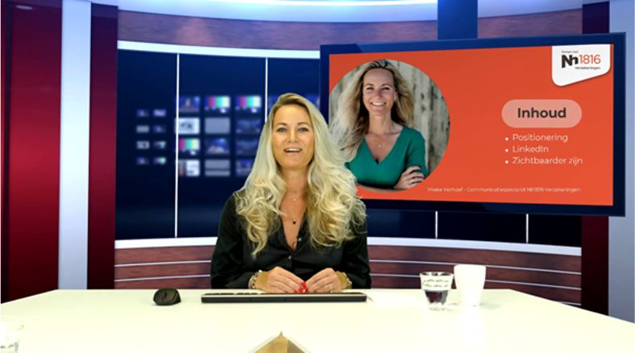

Webinar producties
Een Webinar is de ideale manier om je boodschap te delen, kennis over te dragen of in contact te komen met je publiek, ongeacht waar zij zich bevinden. Webinars kunnen zowel live als on-demand worden uitgezonden. Bij onze Webinar producties zorgen we voor een vlekkeloze ervaring van begin tot eind. Hieronder lees je wat erbij komt kijken en hoe we jou ondersteunen.

Wat houdt een Webinar productie in?
Een professionele Webinar productie bestaat uit verschillende onderdelen, waaronder:
- Voorbereiding: Samen bespreken we je doelen, het format en de doelgroep. Denk hierbij aan live interactie, presentaties, of panel/tafel gesprekken.
- Technische ondersteuning: Bij ons in de studio beschikken we over de juiste apparatuur en software, zoals camera’s, microfoons, verlichting en een stabiel uitzendingsplatform.
- Regie en begeleiding: Tijdens de opnames en live uitzendingen is een expert aanwezig die ervoor zorgt dat alles soepel verloopt. Alle technische zaken worden door ons geregeld en vooraf wordt er besproken hoe alles in goede banen geleid zal worden.
- (Visuele) Contentcreatie: We ondersteunen bij het ontwerpen van visuele elementen zoals slides, video's, banners en achtergronden.
- Interactieve mogelijkheden: Live polls, Q&A en chatfuncties maken je Webinar interactief en boeiend. We stimuleren daarom om dit soort elementen waar mogelijk toe te passen.
Hoe werkt het?
- Kennismaking en planning We starten met een intakegesprek om je wensen en doelen helder te krijgen. Samen maken we een passend programma om de doelen te realiseren.
- Productievoorbereiding
We richten de technische opstelling in, testen de verbindingen en we lopen de onderwerpen van te voren nog na. - Live-uitzending
Tijdens de uitzending zorgen we voor een professionele regie en technische begeleiding, zodat jij je kunt richten op je presentatie. - Evaluatie en opname
Na afloop ontvang je een opname van het Webinar en evalueren we samen hoe alles is verlopen. Daarnaast krijg je alle gegevens nog toezonden in de vorm van een rapportage. In de rapportage zit onder andere: overzicht inschrijvingen, kijkers ratio, gemiddelde kijktijd, interacties en de evaluaties van kijkers.
Waarom kiezen voor ons?
Met onze ervaring en professionele aanpak zorgen we ervoor dat je Webinar een succes wordt. Of het nu gaat om een kleine online presentatie of een uitgebreide live-uitzending, wij staan voor je klaar met maatwerk en persoonlijke begeleiding.
Wil je meer weten of een Webinar plannen?